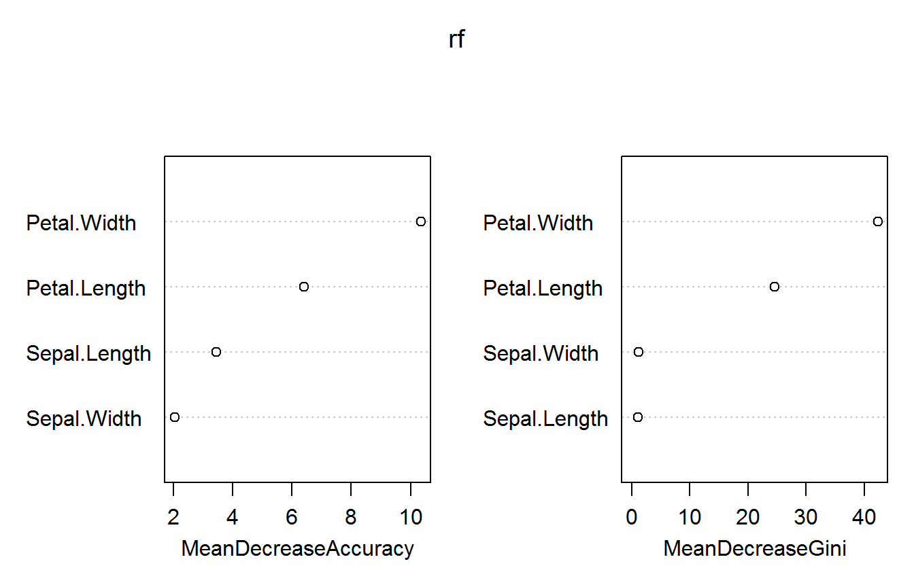

随机森林是一种比较新的机器学习模型，其与上面所讲的k近邻、朴素贝叶斯，决策树等这些算法最大的不同之处就是它是一种基于决策树的集成学习方法，其中每一颗树都依赖于一个随机向量，森林中所有的向量都是独立分布的。
随机森林的实质就是对数据集的列变量和行观测进行随机化，生成多个分类数，最终将分类树结果进行汇总，把汇总后的结果作为最终的预测结果。
我们在决策树这一节已经介绍了决策树的原理，随机森林就是由多个未剪枝的CART分类决策树组成，其不仅可以做回归，还可以做分类。其做回归时返回的结果是单棵树输出结果的简单平均，做分类时的返回结果是单棵树输出结果的众数。
随机森林的构建流程并不复杂，其主要流程如下：
| 优点 | 缺点 |
|---|---|
| 可以适用于大多数问题，可处理噪声和缺失值；分类和连续性特征数据 | 训练和预测比较慢 |
| 两个随机性的引入，使模型不容易过拟合 | 在分类问题中，若目标数据集偏小并变量类别过多，则表现较差 |
| 处理高维度的数据时，可以不用做很详细的征选择 | |
| 在创建随机森林的时候，对generlization error使用的是无偏估计 | |
| 可以返回变量的重要性 |
本案例的主要内容就是使用随机森林对R中自带的iris数据集进行分类。
在R中常用randomforst程序包的实现随机森林算法，该包主要涉及到3个重要的函数，每个参数的详细信息详见下方：
1)randomForest()函数用于构建随机森林模型
randomForest(formula, data=NULL, …, subset, na.action=na.fail)
randomForest(x, y=NULL, xtest=NULL, ytest=NULL, ntree=500,
mtry=if (!is.null(y) && !is.factor(y))
max(floor(ncol(x)/3), 1) else floor(sqrt(ncol(x))),
replace=TRUE, classwt=NULL, cutoff, strata,
sampsize = if (replace) nrow(x) else ceiling(.632*nrow(x)),
nodesize = if (!is.null(y) && !is.factor(y)) 5 else 1,
maxnodes = NULL,
importance=FALSE, localImp=FALSE, nPerm=1,
proximity, oob.prox=proximity,
norm.votes=TRUE, do.trace=FALSE,
keep.forest=!is.null(y) && is.null(xtest), corr.bias=FALSE,
keep.inbag=FALSE, …)
2)importance()函数用于计算模型变量的重要性
importance(x, type=NULL, class=NULL, scale=TRUE, …)
3)MDSplot()绘制建立模型过程中产生的临近矩阵经过标准化后的坐标图，就是可以将高位图缩放到任意小的维度下来观看模型各个类别在不同维度下的分布情况
MDSplot(rf, fac, k=2, palette=NULL, pch=20, …)
4)rfImpute()函数可为存在缺失值的数据集进行插补(随机森林法)，得到最优的样本拟合值
rfImpute(x, y, iter=5, ntree=300, …)
rfImpute(x, data, …, subset)
5)treesize()函数用于计算随机森林中每棵树的节点个数
treesize(x, terminal=TRUE)
mydata <- iris
str(mydata)## 'data.frame': 150 obs. of 5 variables:
## $ Sepal.Length: num 5.1 4.9 4.7 4.6 5 5.4 4.6 5 4.4 4.9 ...
## $ Sepal.Width : num 3.5 3 3.2 3.1 3.6 3.9 3.4 3.4 2.9 3.1 ...
## $ Petal.Length: num 1.4 1.4 1.3 1.5 1.4 1.7 1.4 1.5 1.4 1.5 ...
## $ Petal.Width : num 0.2 0.2 0.2 0.2 0.2 0.4 0.3 0.2 0.2 0.1 ...
## $ Species : Factor w/ 3 levels "setosa","versicolor",..: 1 1 1 1 1 1 1 1 1 1 ...summary(mydata)## Sepal.Length Sepal.Width Petal.Length Petal.Width
## Min. :4.300 Min. :2.000 Min. :1.000 Min. :0.100
## 1st Qu.:5.100 1st Qu.:2.800 1st Qu.:1.600 1st Qu.:0.300
## Median :5.800 Median :3.000 Median :4.350 Median :1.300
## Mean :5.843 Mean :3.057 Mean :3.758 Mean :1.199
## 3rd Qu.:6.400 3rd Qu.:3.300 3rd Qu.:5.100 3rd Qu.:1.800
## Max. :7.900 Max. :4.400 Max. :6.900 Max. :2.500
## Species
## setosa :50
## versicolor:50
## virginica :50
##
##
## 从上述简单的数据探索中发现，数据一共五列。其中四列是数值型，一列是因子型，并且因子型变量的因子水平一致，每个水平的观测均是50个。
分层抽样，又称分组抽样。是一种比SRS更精准的随机抽样法，所用的方法是跟据我们的研究性质，依照相关的条件把母群体中的个体分成不同的层别或组别(strata)，再分别从每一层别或组别中的个体随机抽出一定的个体来组成样本。
在caret程序包中提供了一种非常方便的分层抽样函数createDataPartition()，下面是该函数的参数解释：
createDataPartition(y, times = 1, p = 0.5, list = TRUE, groups = min(5, length(y)))
# install.packages("caret")
library(caret)
set.seed(45)
idx <- createDataPartition(y = mydata$Species, p = 0.7, list = F)
trainset <- mydata[idx, ]
testset <- mydata[-idx, ]
prop.table(table(mydata$Species)) # 计算原数据集中Species的占比##
## setosa versicolor virginica
## 0.3333333 0.3333333 0.3333333prop.table(table(trainset$Species)) # 计算训练集中Species的占比##
## setosa versicolor virginica
## 0.3333333 0.3333333 0.3333333prop.table(table(testset$Species)) # 计算测试集中Species的占比##
## setosa versicolor virginica
## 0.3333333 0.3333333 0.3333333通过分层抽样，我们把数据拆分为了训练集和测试集，并计算其对应的因变量的比例，发现每个数据集中各个类别的比例均是0.33，说明达到了分层抽样的目的。
我们使用上面提到的randomForest()函数对训练集训练模型，设置随机变量的个数为3，树的个数为30，并且计算其变量重要性。
# install.packages("randomForest")
library(randomForest)
set.seed(45)
rf <- randomForest(Species ~., data = trainset, mtry = 3, ntree = 30, importance = T)imp <- importance(x = rf) # 计算变量重要性
imp## setosa versicolor virginica MeanDecreaseAccuracy
## Sepal.Length 0.000000 2.659596 1.428697 3.458823
## Sepal.Width 0.000000 0.000000 2.127039 2.045518
## Petal.Length 4.705308 6.126779 5.735264 6.413416
## Petal.Width 6.510190 10.718260 11.020814 10.340348
## MeanDecreaseGini
## Sepal.Length 1.118633
## Sepal.Width 1.261948
## Petal.Length 24.540647
## Petal.Width 42.307979varImpPlot(rf) # 展示变量重要性
上面使用MeanDecreaseAccuracy和MeanDecreaseGini两种指标衡量了各个变量的重要性，发现最重要的是Patal.Width，其次是Patal.Length这两个变量，从一定程度上也说明了鸢尾花的分类与花瓣有比较大的关系。
pred <- predict(rf, testset[-5]) # 对测试集进行预测
table(pred, testset$Species)##
## pred setosa versicolor virginica
## setosa 15 0 0
## versicolor 0 15 1
## virginica 0 0 14从混淆矩阵中可以看出，仅有一个样本被预测错误(一个virginica的鸢尾花被错误的分类为了versicolor)，改模型的分类效果还是非常好的。
[1] 卡巴科弗. R语言实战[M]. 人民邮电出版社, 2013.
[2] 机器学习——随机森林算法及原理. https://blog.csdn.net/nieson2012/article/details/51279332v. 2016.
[3] 教你使用caret包(一)–数据预处理. https://mp.weixin.qq.com/s/EXq9B-imnX6D27okYvPGkw. 2016
[4] 基于R语言的随机森林算法运用. https://mp.weixin.qq.com/s?__biz=MzIxNjA2ODUzNg==&mid=400806663&idx=1&sn=51b4b7a44a33606bd9262e208f91c2df&mpshare=1&scene=23&srcid=0621JANvo04Zy7uaMQt5kxbg#rd. 2015
[6] 机器学习十大算法—8. 随机森林算法. https://blog.csdn.net/julialove102123/article/details/78405284. 2017